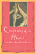

|

|
The
World of Kate Roberts
Selected Stories, 1925-1981
translated
by Clancy, Joseph P.
Publishers Weekly Best Book, 1991 |

|
Black
Theatre
Ritual Performance in the African Diaspora
edited
by Harrison, Paul Carter, Victor Leo Walker II and Gus Edwards
Finalist for the George Freedley Memorial Award for an outstanding
book in theatre or another area of live performance from the
Theatre Library Association, 2002 |

|
Savoring the Salt
The Legacy of Toni Cade Bambara
edited by Holmes, Linda Janet and Cheryl A. Wall
Selected as “‘The Best of the Best’ from the University Presses” Books You Should Know About” for the ALA Annual Conference, 2008 |

|
Dr. Radway's Sarsaparilla Resolvent
Kephart, Beth
Kirkus Reviews' Best in Children's Books, 2013
Parrott Library Award from the St. Albans School Library, 2014 |

|
Performing Asian America
Race and Ethnicity on the Contemporary Stage
Lee, Josephine
Lifetime Achievement Award from the Association of Asian American Studies Conference, 2016
|

|
Searching for Mr. Chin
Constructions of Nation and the Chinese in West Indian Literature
Lee-Loy, Anne-Marie
Gordon K. and Sybil Lewis Book Award, 2011 |

|
Contours
of the Heart
South Asians Map North America
edited
by Maira, Sunaina and Rajini Srikanth, foreword by Abraham Verghese,
afterword by Sucheta Mazumdar
Winner of the 1997 American Book Award, 1997 |

|
Unbought and Unbossed
Transgressive Black Women, Sexuality, and Representation
Melancon, Trimiko
College Language Association Creative Scholarship Book Award, 2016
|

|
Accessible Citizenships
Disability, Nation, and the Cultural Politics of Greater Mexico
Minich, Julie Avril
MLA Prize in United States Latina and Latino and Chicana and Chicano Literary Cultural Studies, 2015
|

|
The
Philippine Temptation
Dialectics of Philippines-U.S. Literary Relations
San
Juan, Jr., E.
Outstanding Academic Book, Choice, 1996 |

|
Messiahs of 1933
How American Yiddish Theatre Survived Adversity through Satire
Schechter, Joel
Outstanding Academic Title, Choice, 2008 |

|
Poems
Performance Pieces Proses Plays Poetics
Schwitters,
Kurt, edited by Jerome Rothenberg, translated by Pierre Joris
Pen Center USA West Literary Award for Translation, 1994 |

|
The
World Next Door
South Asian American Literature and the Idea of America
Srikanth, Rajini
Outstanding Academic Title, Choice, 2005
Cultural Studies Book Award, Association for Asian American Studies,
2006 |

|
The Coolie Speaks
Chinese Indentured Laborers and African Slaves in Cuba
Yun, Lisa
Outstanding Academic Title, Choice, 2008 |
|